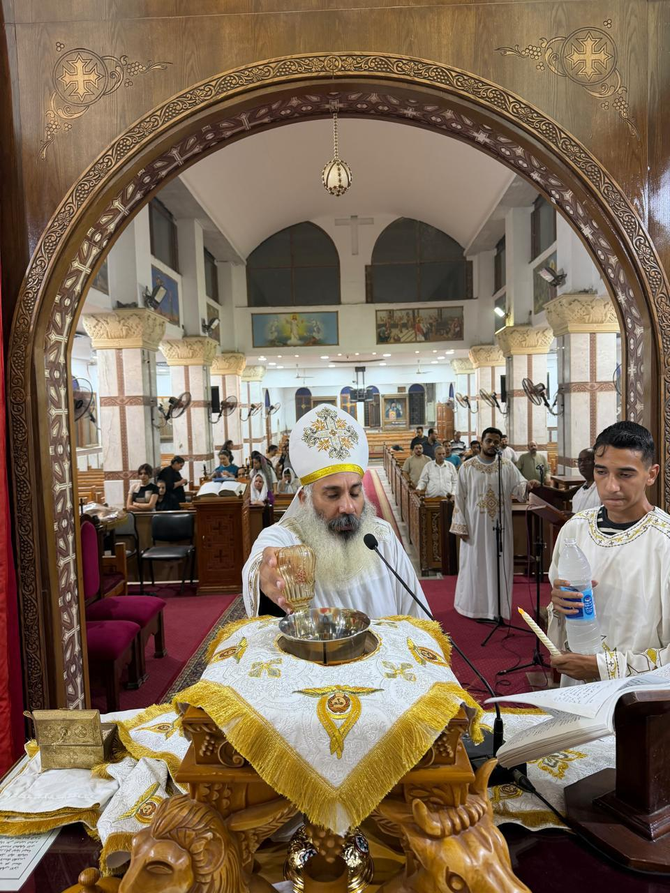

كيف بدأت
هنا يكتب محرر المحتوى قصة نشأة الكنيسة: متى بدأت الصلاة في المكان، ومن الآباء الذين خدموا فيه، وكيف بُنيت الكنيسة الكبيرة والكنيسة الصغيرة.
فقرة ثانية عن مراحل البناء والتجديد، وتدشين المذابح، ومنها مذبح البابا كيرلس السادس بالكنيسة الكبيرة.

فقرة عن الكنيسة اليوم: الخدمات، والاجتماعات، والشعب الذي يجتمع فيها.
«مَا أَرْهَبَ هذَا ٱلْمَكَانَ! مَا هذَا إِلاَّ بَيْتُ ٱللهِ، وَهذَا بَابُ ٱلسَّمَاءِ»
(تكوين 28: 17)